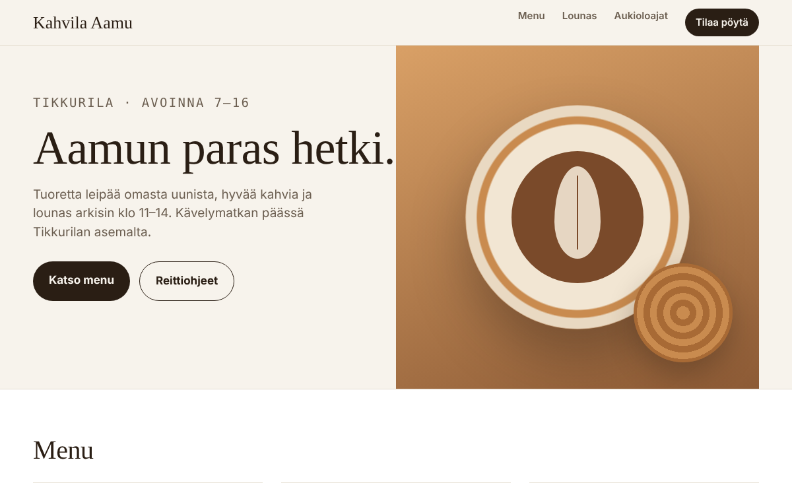

Konseptityö · kuvitteellinen asiakas
Kahvila Aamu, Tikkurila
Kotisivu, Instagram-videomainos ja Google-karttalistaus yhdessä paketissa. Sama esimerkki kuin etusivulla.

Avaa demosivu →Työt
Marktic on uusi toimisto, joten täällä ei ole vielä asiakastöitä. Sen sijaan näytämme rehellisesti, millaista jälkeä teemme: alla on konseptitöitä kuvitteellisille yrityksille. Ensimmäiset asiakkaat saavat perustajahinnan ja paikan tällä sivulla, jos haluavat.
Konseptityö · kuvitteellinen asiakas
Kotisivu, Instagram-videomainos ja Google-karttalistaus yhdessä paketissa. Sama esimerkki kuin etusivulla.

Avaa demosivu →Konseptityö · kuvitteellinen asiakas
Näkyvyyden korjauspaketti: Google-yritysprofiili, hakemistot ja palvelusivut, joista hakupalvelut löytävät yrityksen.
| Ennen | Jälkeen (30 pv) | |
|---|---|---|
| Google-yritysprofiili | Puutteellinen | Kunnossa |
| Hakemistot, joita hakupalvelut käyttävät | 1 / 5 | 5 / 5 |
| Hakupalvelut mainitsevat yrityksen | 0 / 3 kysymyksessä | 2 / 3 kysymyksessä |
| Kotisivuilla rakenteinen tieto | Ei | Kyllä |
Luvut ovat esimerkki siitä, miltä raportti näyttää, eivät mittaustulos.
Konseptityö · kuvitteellinen asiakas
4 sekunnin 3D-tuotevideo ilman kuvauksia: kahvi ja croissant, hidas kamera-ajo, teksti päälle. Toistuu silmukkana. Sama kuvitteellinen kahvila kuin kotisivussa.
Oma työ
Marktic.fi on tehty samalla tavalla kuin asiakkaiden sivut: nopea, toimii puhelimessa, rakenteinen tieto hakupalveluille, ei seurantaevästeitä. Jos pidätte tästä, saatte samanlaisen.